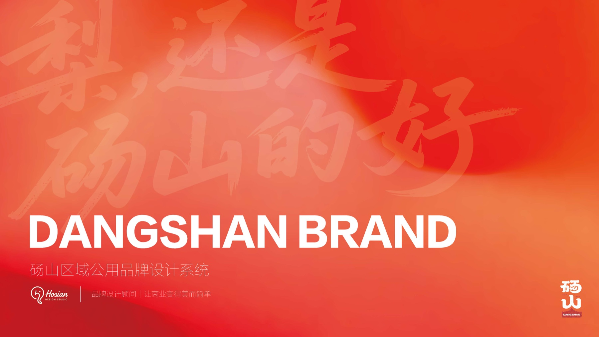
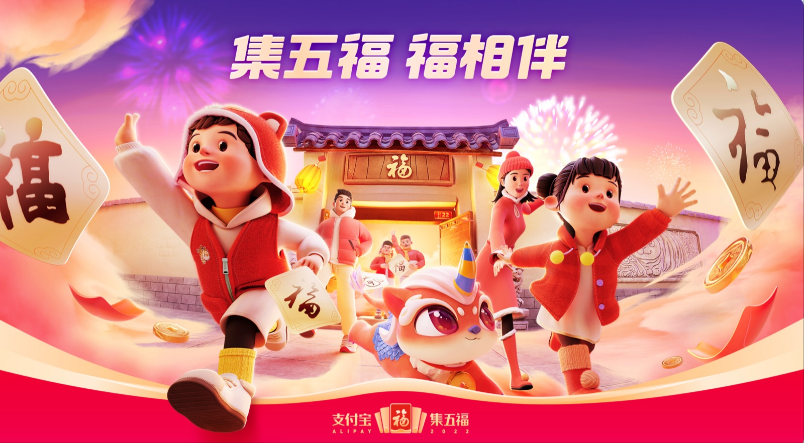
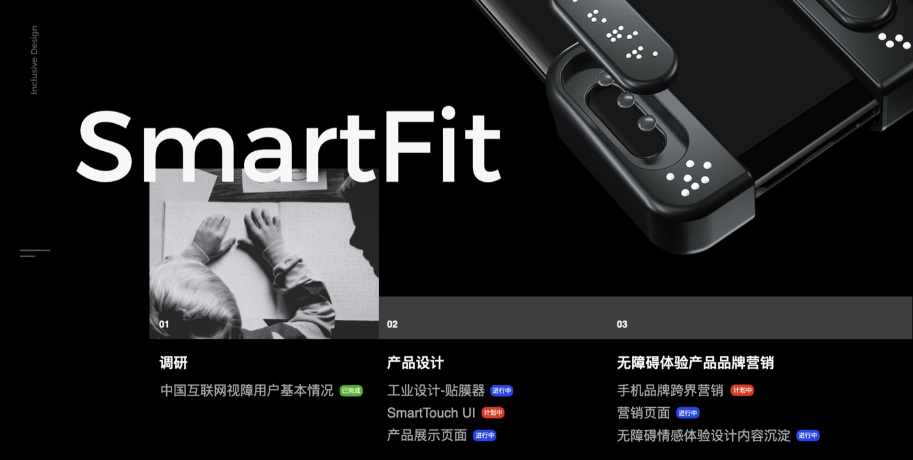

砀山区域公用品牌 Red Honesty 2.0
- 项目背景
- 砀山作为中国酥梨之乡，面临产地品牌弱、溢价低、信任难建立的困境。
- 核心问题
- 如何让"赤诚"这一抽象价值可感知、可传播、可落地到供应链全链条？
- 我的判断
- 品牌不是一个标志，而是一套从种植标准到视觉表达的完整判断系统。
- 设计动作
- 构建 Red Honesty 品牌系统，包含标志、包装、物料、应用规范与AI生成工作流。
- 项目价值
- 让信任可以被看见，标准可以被感知，为区域公用品牌提供可复制的方法范式。
方法想象® 工作法 / Methodology
诊断
理清品牌现状、目标人群、竞争环境与核心问题
判断
确立品牌定位、价值主张与视觉策略方向
系统
搭建可复用的视觉识别系统与应用规范
生成
基于系统生成包装、物料与传播内容
落地
交付完整手册、培训团队、持续迭代优化
项目实践 / Cases



核心服务 / Services
帮助企业重新理清品牌定位、目标人群、价值主张与叙事结构，为后续视觉工作建立判断基准。
构建可复用、可生长的品牌视觉系统，包括标志、字体、色彩、版式、包装与衍生应用。
围绕招商、发布、活动与渠道传播，搭建统一叙事下的物料体系与落地执行。
作为外部品牌视觉负责人，参与关键决策、把控设计质量、协同内部团队长期演化。
将AI工具真正嵌入品牌视觉生产流程，建立从提示词到交付的稳定创意工作流。
为什么需要方法想象®
定位模糊导致设计反复修改，每一次返工都是品牌信任和预算的双重损耗。
没有可复用的视觉系统，每次传播都像重新开始，品牌资产无法沉淀。
包装、详情页、海报、招商物料各自为战，缺少系统关系和叙事一致性。
AI生成了很多素材，但没有形成稳定的创意流程，质量与效率都难以保证。
Design Logic / 个人观点
关于发起人 / About
前阿里巴巴 / 蚂蚁集团高级创意设计专家，长期参与互联网平台级品牌、营销与公共项目的视觉系统建设。
从大厂创意系统到独立品牌顾问实践，方法想象® 关注的不只是单次设计交付，而是帮助企业建立长期可复用的品牌判断、视觉方法与商业表达系统。
主导的「砀山模式」公益助农设计与 smart FIT 视障辅助产品设计，获得红点奖、金投赏、A Design Award 等国际奖项，被业界视为以品牌方法驱动社会价值的典型实践案例。
合作方式 / Collaboration
2-4小时深度诊断，理清品牌定位、视觉策略与核心问题，输出诊断报告与行动建议。
针对具体项目（品牌系统、包装、传播物料）提供完整设计服务，从判断到落地一站式交付。
作为外部品牌视觉负责人，参与关键决策、把控设计质量、协同内部团队长期演化。
开始一次判断 / Contact
适合在品牌定位、视觉系统、包装与传播物料、AI设计流程建设等关键节点，先用一次清晰的诊断把问题说透。